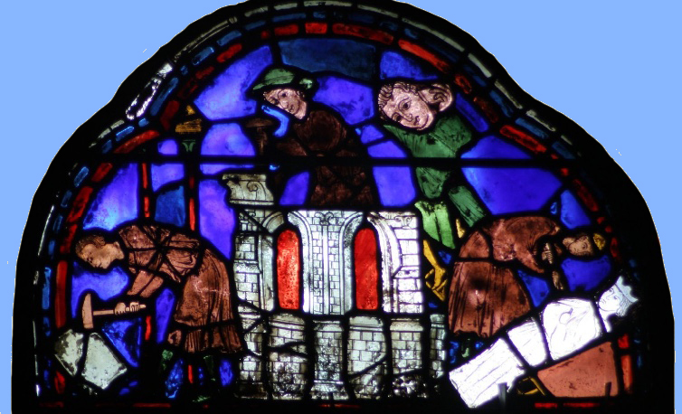
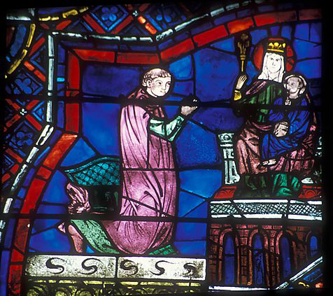
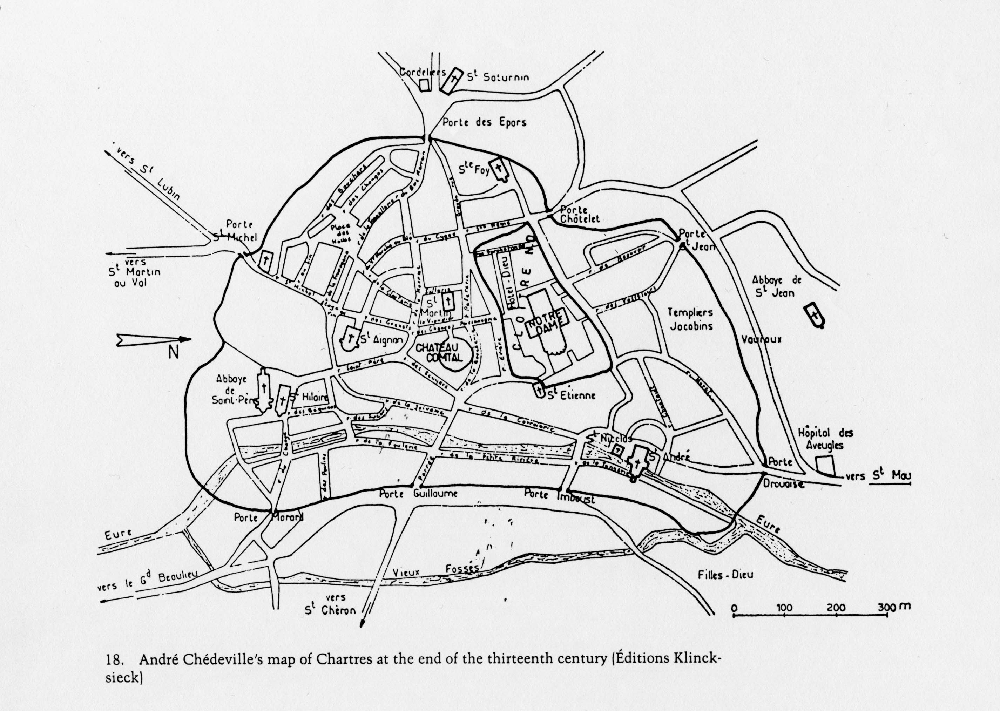
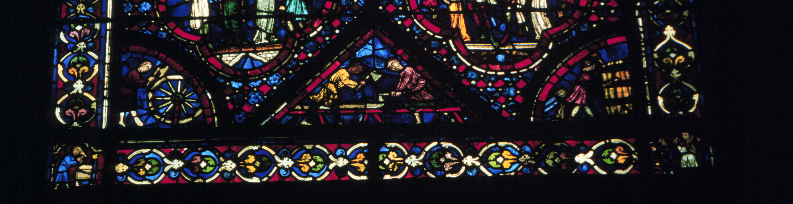
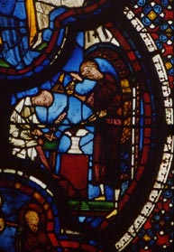
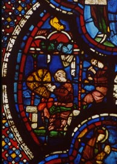
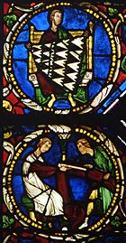

|
 Chartres cathedral, stained glass, donors: |
Chartres, a cathedral town |
 |
Chartres was a Roman town, probably built on an older inhabited site. The Roman town was of some importance, with an amphitheatre and two aqueducts. The earliest recorded Christian presence at Chartres occurs in the fourth and fifth centuries, with the names of some early bishops. The first record of a cathedral is in 743, when the town was sacked by the Duke of Aquitaine. It was sacked again by the Vikings in 858, and, when the cathedral was rebuilt, the emperor Charles the Bald (Charlemagne's grandson) gave it the relic known as the Sancta Camisia, supposedly the tunic worn by Mary at the Annunciation or at the Nativity. In 911, the Sancta Camisia supposedly saved the city from another sack by the Vikings.
Before the 920's, the bishop was the ruler of the city in both
sacred
and secular affairs. In the tenth century, Chartres became part
of
the fief given by the king to the count of Chartres and Blois, but the
relationship between the bishop and the count in regard to the city
itself
was not spelled out. Essentially they shared jurisdiction, rather
uneasily. Despite the fact that charters authorizing inhabitants
of towns to govern themselves were becoming increasingly prevalent in
the
twelfth and thirteenth centuries, Chartres was not governed by a
commune
(the usual term for a city council) during this period.

In the twelfth and thirteenth centuries, Chartres was not a terribly large town; estimates of its population in the early 13th century are around 7000 people (compared to 40,000 for Paris). Nevertheless, in 1194, just before the fire, new ramparts had been built to contain the growing population.
The bishop of Chartres was one of the more important church officials in France, and his appointment was often controlled by the king. The bishop managed property throughout the diocese, and had many vassals; the chapter, which included included canons (quasi-monastic clergy affiliated with the cathedral), headed by deans, had its own rights and property that made the canons collectively the richest cathedral chapter in France.
The count had the right to set and collect taxes and exercise justice in the town outside the area around the cathedral. The count divided many of these taxes with the bishop. The chapter had jurisdiction of the area immediately surrounding the cathedral, which was where the cathedral fairs took place. But all of these rights were frequently contested.
By the early 12th century, the town included a thriving merchant and artisan population. Some of these tradesmen lived in the cathedral precinct and were considered serfs of the chapter, while others lived in the town itself. One of the ways that we know about the different artisans who lived in the city is by the records of the groups who were gave offerings to decorate the cathedral. The windows of Chartres are filled with stained glass, and at the bottom of most of the windows are depicted symbols of the individuals or groups who gave the money for them. Forty-three of the windows were given by merchant guilds: money-changers, fishmongers, wine-makers, bakers, tanners, wheelwrights, armorers, shoemakers, apothecaries, blacksmiths, builders, etc. The main product of the area was wheat, and the main industry (if it can be called that), the only one whose products are known to have been exported, was wool-making. In the 13th century and before, these trades were under the control of the count's provost, and the trade was largely local, although with some import and export. The count taxed and controlled the tradesmen directly, appointed masters over some of the trades, and assigned their taxes sometimes to the churches, or to charitable organizations. In the twelfth and thirteenth centuries, the count is known to have appointed masters for the furriers, tavern-keepers, fishmongers, shoemakers, and butchers.  (Noah window: bottom left quarter circle - wheelmaker; center triangle - carpenters; bottom right quarter circle - barrel-makers) |
 (cobblers)  (armorers)  (cloth-merchants) |
You might think these groups got along, but in fact they didn't. When a new bishop came in, he had to swear an oath to the count that he would never threaten the count's authority. Also he had to swear an oath saying that he would respect the chapter's customs and privileges.
Manumitted serfs had to swear oaths never to take part in the formation of a commune (i.e. a town council) at Chartres or elsewhere, and to try to prevent such a formation. Failure to conform to this promise would cause immediate return to servitude.
These oaths indicate the types of tensions prevalent in the city.
In the twelfth and thirteenth centuries, Chartres was known throughout Europe for two features which still bring it fame today:
*Much of this information, and the map of the town, were taken from Jane Welch Williams, Bread, Wine, and Money: The Windows of the Trades at Chartres Cathedral (Chicago: University of Chicago Press, 1993). Slides of the cathedral, unless otherwise noted, were taken by Deborah Deliyannis or her father, Seymour Mauskopf.